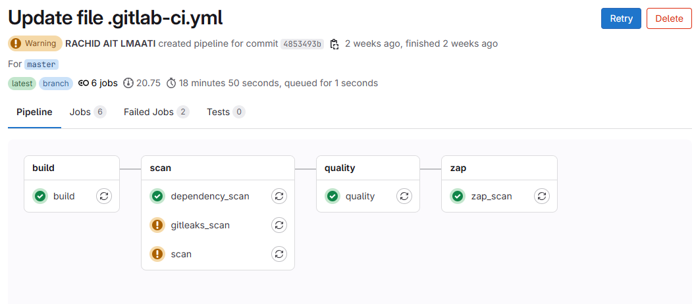

Vue d'ensemble du pipeline CI/CD sécurisé
Cette capture montre l’exécution complète du pipeline CI/CD utilisé dans ce projet. Chaque étape est visible : de la construction de l’image à l’analyse de sécurité dynamique, en passant par les audits de dépendances et de secrets.
1. Gitleaks – Détection de secrets exposés
Gitleaks scanne le dépôt Git à la recherche de secrets sensibles : clés API, tokens, mots de passe... C’est un outil préventif indispensable dans tout pipeline DevSecOps.
Dans ton pipeline, il s'exécute sans dépendre de l'historique Git (--no-git), ce qui lui permet de scanner aussi les fichiers temporaires.
Le rapport généré en JSON est archivé comme artefact et permet un suivi automatique des fuites potentielles.
2. npm audit – Audit des dépendances JavaScript
npm audit analyse les dépendances déclarées dans package.json pour détecter les vulnérabilités connues.
Dans le pipeline, la commande npm audit --json est exécutée à chaque commit.
Le rapport inclut le niveau de gravité de chaque vulnérabilité, les chemins d'accès, et parfois des correctifs proposés.
Les failles critiques ou hautes sont marquées en priorité.
3. OWASP ZAP – Test dynamique de l’application (DAST)
OWASP ZAP est un outil de DAST (Dynamic Application Security Testing) qui simule une attaque réelle contre l’application.
Intégré dans ton pipeline, il est exécuté via Docker avec le script zap-baseline.py, ciblant l’instance publique de Juice Shop.
Ce script effectue un scan non authentifié et génère un rapport HTML avec :
- erreurs HTTP,
- problèmes de configuration,
- formulaires mal protégés,
- headers de sécurité manquants.
Ce test vient compléter les analyses statiques (comme SonarQube) en inspectant l'application **en fonctionnement**, comme le ferait un attaquant.